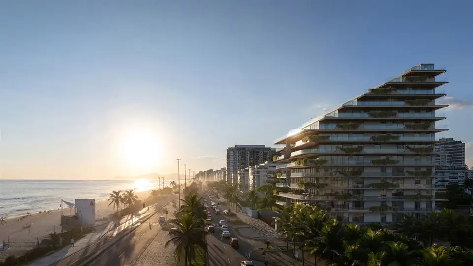

Imagens


Galeria
Imagens ilustrativas, de caráter artístico, conforme material da incorporadora.

Apartamentos de luxo de 4 a 6 suítes na Barra da Tijuca
O Atto by Pininfarina é um empreendimento de altíssimo padrão, desenvolvido pela incorporadora Origem e estrategicamente localizado na Avenida Lúcio Costa, 4446, de frente para o mar da Barra da Tijuca, no Rio de Janeiro. Assinado pelo renomado estúdio italiano Pininfarina, famoso pela criação de ícones no design automobilístico de marcas como Ferrari, o Atto by Pininfarina se destaca por sua arquitetura inovadora e funcional. Assim, ele oferece uma experiência única de exclusividade, conforto e sofisticação.
Com poucas unidades exclusivas, o Atto by Pininfarina proporciona aos moradores o máximo de privacidade e exclusividade. As tipologias contam com apartamentos, coberturas e uma exclusiva penthouse triplex e possuem metragens de até 1.100 m², atendendo aos mais elevados padrões de conforto. Para completar, todas as unidades contam com 4 a 8 vagas de garagem, garantindo praticidade e segurança para os moradores.
Outro diferencial do Atto by Pininfarina é a sua área de lazer, planejada para elevar a experiência de morar à beira-mar. O empreendimento oferece infraestrutura completa, como uma piscina com raia de 18 metros, piscina de contemplação, um sofisticado SPA by W SPA, academia equipada, área infantil e solário. Além disso, o condomínio inclui serviços personalizados, como concierge, atendimento à praia e piscina, proporcionando conforto e exclusividade para os moradores. Para tornar a experiência ainda mais elegante, os ambientes comuns exibem mobiliário assinado pela própria Pininfarina.
Morar no Atto by Pininfarina é viver diariamente em uma localização privilegiada. O empreendimento não só oferece vistas deslumbrantes para o mar, como também está próximo aos principais shoppings da região, incluindo o VillageMall e o BarraShopping. Além disso, a proximidade de excelentes restaurantes, escolas renomadas, hospitais modernos e vias de acesso mantém os moradores conectados a tudo o que há de melhor na cidade. Assim, o Atto une conveniência, segurança e sofisticação em um só lugar.
Por fim, é importante ressaltar que o sofisticado toque da Pininfarina está presente em cada detalhe deste empreendimento. A união entre inovação tecnológica, design contemporâneo e acabamentos luxuosos transforma cada apartamento em uma verdadeira obra de arte. Dessa forma, o Atto by Pininfarina é perfeito para quem valoriza sofisticação, estilo e privacidade.
Viva o Atto by Pininfarina: o endereço onde o design internacional e o estilo carioca se encontram para criar o auge do luxo e exclusividade.
Metragens, tipologias e disponibilidade conforme material oficial da incorporadora, sujeitos a alteração sem aviso. Valores e condições confirmados na tabela vigente. Seleção e atendimento: Paulo Cotrim, CRECI-RJ 77677-F.
Imagens ilustrativas, de caráter artístico, conforme material da incorporadora.